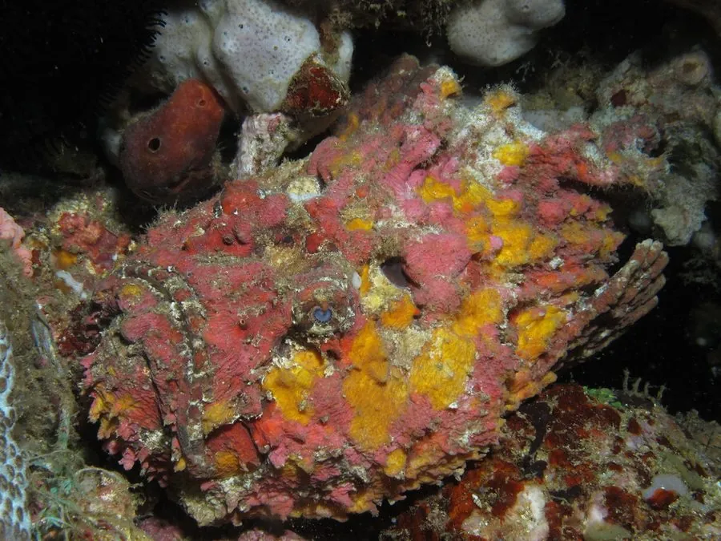

鱼类 · 动物界
石头鱼 Synanceia verrucosa

外形酷似礁石或长满藻类的石块，背鳍十三根毒棘可注入剧毒，是世界上最毒的鱼类之一，被刺后疼痛剧烈甚至危及生命。
- 分类
- 门脊索动物门纲硬骨鱼纲目鲉形目科毒鲉科属毒鲉属
- 栖息环境
- 浅海珊瑚礁、岩礁、沙底与河口，常静伏于礁石或沙中
- 地理分布
- 印度洋与太平洋热带海域，从红海、东非至日本南部、澳大利亚与波利尼西亚
- 保护级别
- IUCN 无危（LC）
物种志
石头鱼体形粗短肥胖，体长约 30–40 厘米，体重 1–2 千克。皮肤粗糙、布满疣状突起，没有鳞片，体色灰褐、暗红或黄褐，表面常附生藻类，与礁石、珊瑚碎块几乎无法分辨，是极致的伪装者。头部宽大，口大向上，眼小位于头顶；胸鳍宽大呈扇形，可支撑身体伏在海底。背鳍有 13 根粗壮的毒棘，每根棘基部有毒腺，棘外套着薄皮鞘，受压时毒液注入伤口。
它们分布于印度洋与太平洋的浅海礁区、沙底与河口，多静伏不动，等小鱼、虾、蟹靠近时突然张口吸入。石头鱼不主动攻击人，但被踩到或触碰时毒棘会立即竖起刺入，毒液含神经毒素与溶血毒素，可引起剧烈疼痛、肿胀、组织坏死，严重时导致呼吸麻痹。急救需将伤处浸入热水以破坏毒素并立即就医。它们可食用，肉质细嫩，但处理时必须小心去除毒棘。
形态与习性
- 体长约 30–40 cm，体重 1–2 kg
- 食性小鱼、虾、蟹等底栖动物
- 毒棘背鳍 13 根毒棘，棘基有毒腺，受压即注毒
- 毒性毒液含神经毒素与溶血毒素，可致剧痛、坏死甚至呼吸麻痹
- 伪装皮肤疣突并附生藻类，与礁石几乎无法分辨
- 急救伤处浸入热水可破坏部分毒素，须立即就医
- 寿命估计 10–15 年
趣味知识
- 石头鱼趴在礁石上一动不动，几乎没人能一眼把它和石头分开。
- 它背上有十三根毒棘，踩到时会立刻竖起注入毒液。
- 被刺后把伤处泡进热水能缓解疼痛，但必须马上送医。